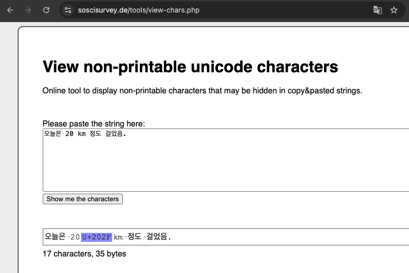
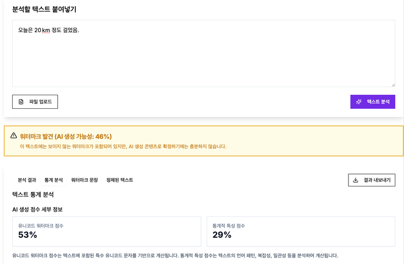
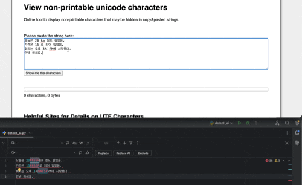

ChatGPT가 쓴 글을 복사해 오면 눈에 보이지 않는 공백 문자가 섞여 있을 때가 있어요. 대표적인 게 U+202F예요. 어떤 문자인지, 어떻게 찾고 지우는지 정리했어요.
2025년 4월, Rumi Labs가 ChatGPT의 o3·o4-mini 모델이 만든 글에 일반 공백(U+0020) 대신 U+202F가 섞여 나온다고 발표했어요. 이를 "워터마크"로 소개하면서 화제가 됐지만, OpenAI가 이것을 워터마크라고 밝힌 적은 없어요. Rumi도 4월 23일 업데이트에서 다시 테스트했을 때는 더 이상 나오지 않았다고 정정했어요.
그런데 이후 GPT-5에서도 U+202F가 섞여 나와 macOS 일부 앱에서 글자가 깨진다는 제보가 OpenAI 개발자 포럼에 올라왔어요. 워터마크든 아니든, 복사한 글에 이런 문자가 남아 있으면 줄바꿈이 이상해지거나 문자열 비교·검색이 어긋날 수 있어서 알아 두면 좋아요.
Narrow No-Break Space(NNBSP)예요. 일반 공백보다 폭이 좁고, 앞뒤에서 줄이 바뀌지 않게 붙잡아 두는 공백이에요. 프랑스어처럼 숫자와 단위 사이(예: 10 m)를 붙여 써야 하는 곳에 써요. 화면에서는 일반 공백과 거의 구분이 안 되지만 코드값이 달라요.
일반 공백 U+0020 "띄어 쓰기"
NBSP U+00A0 줄바꿈을 막는 공백
NNBSP U+202F 폭이 좁고 줄바꿈을 막는 공백키보드로는 직접 입력하기 어려운 문자라, 글에 섞여 있다면 대부분 다른 곳에서 복사해 온 경우예요.
SoSciSurvey의 View non-printable unicode characters에 글을 붙여 넣으면 숨은 문자가 강조돼서 보여요.

mark.ai.kr도 같은 문자를 찾아 줘요. 다만 함께 나오는 "AI가 쓴 확률"은 참고만 하는 게 좋아요. 텍스트만 보고 AI 작성 여부를 정확히 판정하는 방법은 아직 없어요.

자주 섞여 들어오는 보이지 않는 문자를 한 번에 찾는 코드예요.
// JavaScript
const HIDDEN = /[ ]/g;
function findHidden(text) {
return [...text.matchAll(HIDDEN)].map(m =>
`U+${m[0].codePointAt(0).toString(16).toUpperCase().padStart(4, "0")} (위치 ${m.index})`
);
}# Python
import re
HIDDEN = re.compile("[ ]")
for m in HIDDEN.finditer(text):
print(f"U+{ord(m.group()):04X} (위치 {m.start()})")메모장이나 메신저에 붙여 넣었다가 다시 복사해도 이 문자는 그대로 남아요. 직접 바꿔 줘야 해요.
PyCharm(Ctrl+R)이나 VS Code(Ctrl+H)에서 정규식 옵션을 켜고, 찾을 내용에 [ ], 바꿀 내용에 공백 한 칸을 넣고 모두 바꾸면 돼요.

// JavaScript
const clean = text
.replace(/[ ]/g, " ") // 줄바꿈을 막는 공백 → 일반 공백
.replace(/[-]/g, ""); // 폭이 없는 문자 → 삭제# Python
import re
clean = re.sub("[ ]", " ", text)
clean = re.sub("[-]", "", clean)유니코드 NFKC 정규화(unicodedata.normalize("NFKC", text), text.normalize("NFKC"))로도 U+00A0과 U+202F는 일반 공백이 돼요. 다만 전각 문자나 ① 같은 기호도 함께 바뀌니, 공백만 고치려면 위처럼 바꿀 문자를 지정하는 쪽이 안전해요.
이 문자가 정말 워터마크 역할을 할 수 있는지는 다음 글에 정리했어요.